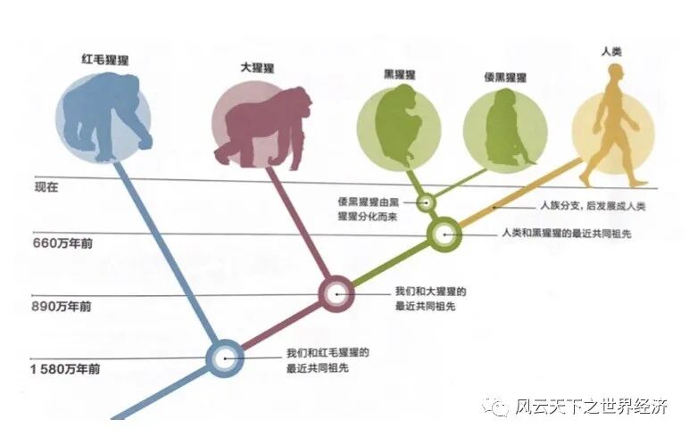
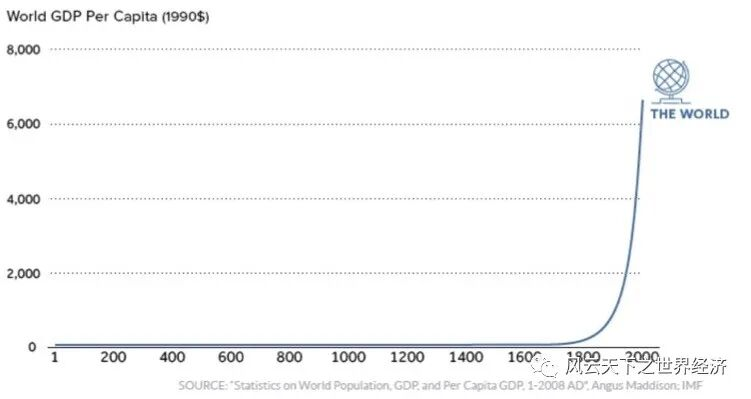
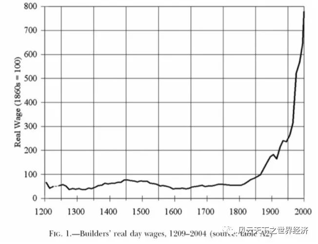
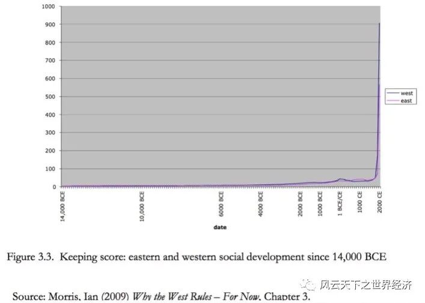
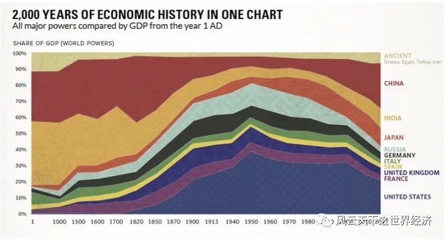
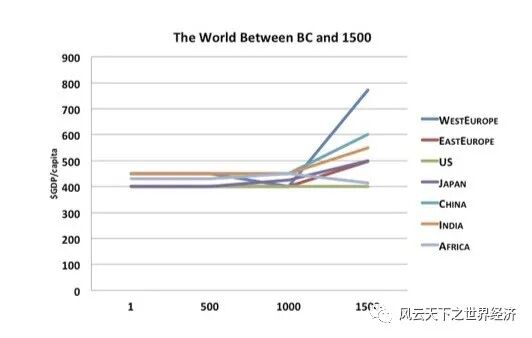
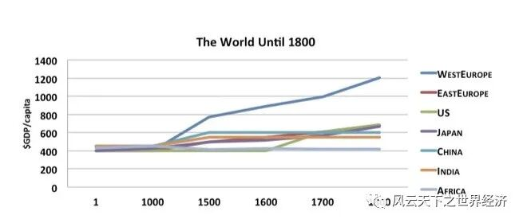
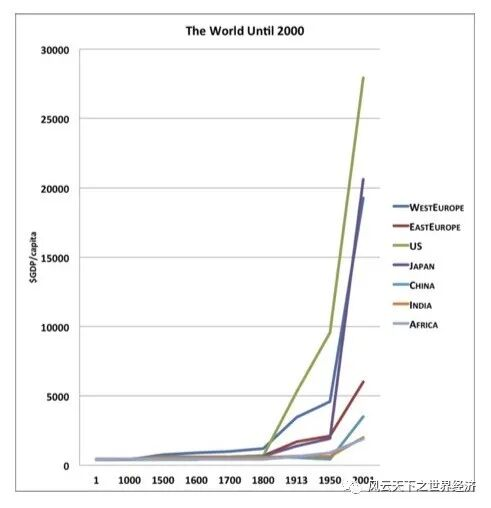

> 像工业革命这么重要的事情，为什么要等上1万年？
这个世界一直是这样的吗？
当今经济学面临的最紧要的问题是什么？2006年，当剑桥大学经济学家Partha Dasgupata应牛津大学出版社的请求写一本关于经济学的通俗读物时，他没有像大多数经济学教科书那样从理性经济人范式开始讲起，而是选择了两个虚构的10岁儿童作为开篇；其中一个生活在美国中西部的贝基，而另一位则生活在埃塞俄比亚西南部乡村的德丝塔。
生活在美国中西部地区的贝基
生活在埃塞俄比亚西南部乡村的德丝塔
至少在Dasgupata教授看来，唯有这样的方式才能让我们直观感知这个世界最紧要的问题。
贝基和德丝塔生活的世界如此不同，这一切又是怎么发生的呢？解决这个问题有两个思路，一个方法是找出影响他们收入水平的影响因素，例如教育、文化、技能等等，这些既可以通过逻辑推理的方法来处理，也可以像大多数实证经济学家那样通过收集数据，然后用因果推断的方法来进行验证。
这个思路也是当前主流经济学已经和正在醉心其中的事业。
但是，大多数经济学家忽视了另外一个思路，那就是追问这样一个问题：这个世界一直是这样的吗？
如果答案是肯定的，那么这就是一个亘古未改的事实，众生只能在它面前俯首称臣，这个如此不同的世界也就变得天经地义了。但是，如果答案是否定的，即人类是从一个共同的起点一步一步走到今天的山川异域，那么只要沿着时间的线条去逆向追索这个分化的历程，你应该可以找到一个更加令人信服的答案。
Lucy祖母与共同的起点
在人类史研究领域，Lucy是一个具有特殊含义的女名。因为一个由古人类学家、地质学家和埃塞俄比亚化石搜寻者组成的国际野外小组的旷世发现，让她和人类的起源永远地联系在了一起。
位于埃塞俄比亚国家博物馆的Lucy祖母化石
1974年11月24日，经过连日的暴雨冲刷，埃塞尔比亚首都亚的斯亚贝巴东北郊的哈达尔遗址又有一些新的土层裸露出来。人类学教授约翰森和他的埃塞俄比亚同事阿斯福发现了一具迄今为止最为完整的女性原始人化石。她生活在距今320万年前，属于南方古猿阿尔法种，经过线粒体的测定，她曾一度被认为是现世人类的共同祖先。
当天晚上，人们为发现了一具看起来相当完整的人类骨架而欢呼雀跃。他们喝酒、跳舞、唱歌，考古营地的上空回响着着披头士的歌曲《 Lucy in The Sky with Diamonds》。就在那天晚上，没有人记得是谁给这具骨架起的名字“露西”流传下来了。

人类演化树
尽管Lucy是否为全人类共同祖先这一论断依然存在争议，但有一个广泛的共识是人类起源于东非大草原。
在1580万年前，我们和红毛猩猩依然有着共同的祖先。
在890万年前，我们和大猩猩的共同祖先生活在非洲一隅。
在660万年前，我们的祖先与黑猩猩作别，开始走向一条独特的演化之路，并最终成为制霸全球其他物种的王者。
在生物学家和人类学家看来，现存于地球的形形色色的人们无论他们的差距有多大，都有一个共同的名字——智人（Sapiens）。
在5万年前，这个世界依然存在着无数种进化的可能；但是在1.2万年前，只有智人进化成了高等智能生物，并主宰了这个星球。
Lucy祖母的存在至少证明了一点：世界不同角落的人们有一个共同的起点，他们祖先的生活曾经别无二致。但是如今他们的生活图景却形同云泥，在这1.2万年里到底发生了什么？
“曲棍球杆”在这里弯折
在很长的一段时间里，人类的经济生活水平处在一个近乎停滞的状态，所有的人都在重复着他们父辈乃至祖先的日子。在平均意义上，如果某个人在公元前10000年前沉沉地睡去，然后在公元1700年的某个清晨醒来，他也许会发现自己只是睡了一觉而已，因为周遭的世界和他入睡前几乎差不多……直到某一天的到来。
在1800年前后，机器的轰鸣声率先在不列颠岛的曼彻斯特和兰开夏等地区响起，打破了长久以来的沉寂，然后逐渐向四周散开，恰如投入江心的石子，荡开了整个世界，最终将大部分人类推向现代经济时代。
人类财富的曲棍球杆在这个后来被称为工业革命的时点弯折，以一个近乎不可思议的曲率掉头向上，直到把我们带到物质极度丰富的现世。

人类财富的“曲棍球杆”
这就是世界经济史极尽简化后的样子。
当然，人均国内生产总值这样的指标在刻画人类的福利状况时总是显得有失偏颇，如果我们换一个与我们的生活水平更为接近的指标，这个“曲棍球杆”还会存在吗？借助经济学史学家格里高利·克拉克的研究，我们可以用过去1000年的英国实际工资水平一探究竟。你可以看到，一个近似的曲棍球杆斜倚在1200年到2000的时间长廊里，而弯折点则发生在了1800年前后。

格里高利·克拉克对过去1000英国人均工资的估计
另一个与人类福利息息相关的指标是预期寿命，它又经历了怎样的变化呢？历史学家James Riley估计，即使在公元前1世纪处于鼎盛时期的罗马，大多数人的寿命也只有25岁。而在前现代的贫穷世界，所有地区的预期寿命也不过30岁左右。这就是我们的祖先所经历的现实。直到最近250年，人类开始在健康状况方面取得进展。流行病学家将这个预期寿命开始大幅增加的时期称为 "健康转型"。而健康转型恰巧也发生在19世纪初，在接下来的一个世纪里，世界所有地区的预期寿命都翻了一番。与之前两个“球杆”不同的是，这个预期寿命的曲棍球杆有着更小的曲率。

伊恩·莫瑞斯估计的人类发展指数
如果我们想在更长的时间跨度观察人类生活状况的变化，则需要引用斯坦福大学历史学家和古典文学家伊恩·莫瑞斯对于人类发展模式的超长估计。秉承着爱因斯坦 “科学，要尽量做到最简，但不要过于简单” 的训诫，他设计并估计了人类发展指数，该指数囊括了能量获取、城市化、信息处理和发动战争等四个维度的因素，估计的时长向后回溯到了公元前14000年。当这个指标以几何形态呈现时，我们看到的是一个形态更加畸变的“曲棍球杆。”
他的球杆身更短，杆头超长。但是它仍然是一根“曲棍球杆”，而且弯折的时点还是1800年。
大分流，小分流
人类财富增长这一曲棍球杆的一个显著的弱点是隐匿了地区的差异，那么不同地区的人们又经历了怎样的命运？
在这个宏大的问题面前，图表是最好的故事讲述者，摩根大通市场和投资策略主席 Michael Cembalest 在一封研究短文里为我们展示了这一点。图中显示从公元元年到现在每个国家在全球经济中所占份额的变化。

Cembalest绘制的2000年经济史中的“大分流”
首先，1800年再次成为时间轴上的焦点。《大西洋月刊》特约撰稿人德里克 · 汤普森评论道：“1800年左边的一切都是全世界人口分布的近似值，1800年右边的一切都是全世界生产力差异的证明。”
在1800年以前，财富和人口成正比例关系。印度和中国在公元1年占世界 GDP 的四分之三，因为他们拥有世界四分之三的人口。但是1800年以后，他们仍然拥有相似的比例的人口，但是他们的GDP已经不足世界的五分之一。工业革命的横空出世击碎了人口和财富之间的稳定关系，从此以后的财富故事开始进入到另外一种叙述模式，欧洲和北美国家的命运与世界其他地区也从此踏入不同的财富增长路径。
经济史学家彭慕兰称此为“大分流”（Great Divergence）。

公元1000-1500年的小分流
但是，仔细审视欧洲的内部，我们还会有更多的发现。在1000年到1500年之间，由于适度的技术和农业组织革新，比如三田轮作的盛行和新式马具的发明，西欧的工资开始慢慢上升，并从世界其他地区的增长道路上分野。
经济史学家Robert Allen称此为“小分流”。

耶稣和拿破仑所生活的不同世界
如果拿耶稣和拿破仑之间的人均GDP数据作图，你可以更清楚地看到西欧和世界其他地区之间的真正差异。
在上面的图表里，x 轴玩了一个跳房子的游戏。我们有公元元年的数据，然后是1000年后的数据，500年后的数据，接着是以100年作为稳定的增量。如果我们略去前面极度压缩的1500年，来观察公元1500年后世界主要国家的表现，你看到的将是西欧国家和美国先后一骑绝尘。如果把时间延长到2000年，日本和中国的赶超故事开始先后上演，日本在一战前尚落后于东欧，但是在20世纪末几乎赶上了美国。而更具爆发力的，则是在20世纪中叶落后于非洲的中国，现在可能已是工业化历史上最伟大的成功故事。

过去2000年的世界
如此绵长的经济史时空之旅，让那些丰富的细节都幻化成不同颜色的线条，但也让一个事件惊人地突兀起来，那就是工业革命。
这么重要的事情为什么要等上1万年？
对这一问题的探寻，足以让工业革命成为世界经济史研究的圣杯。
注：本文所使用的大部分经济史数据的原始来源是已故著名经济史学家安格斯·麦迪森。他的伟大著作《世界经济千年史》为Cliometrics计量史学研究提供了最基础的素材和无限的可能。